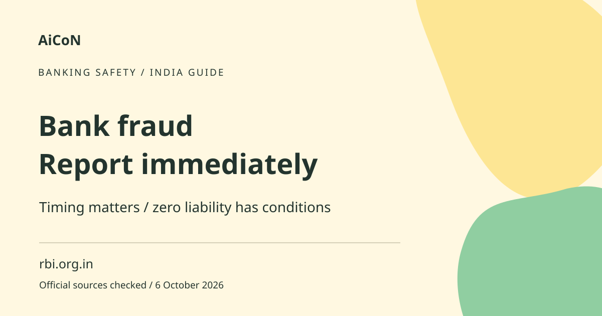

Bank fraud: report fast and check RBI liability rules
Tell your bank immediately if you see an electronic transaction you did not authorise. RBI's zero-liability rules depend on where the failure occurred and how quickly you report it. Three working days is not a universal refund guarantee.

What counts as the issue covered here?
This guide covers unauthorised electronic banking transactions under the cited RBI directions for the listed banks. It does not decide liability for every payment dispute. A payment you personally authorised after being tricked may raise different facts from an unauthorised debit. Tell the bank accurately what happened rather than changing the description to fit a rule.
How to use it, step by step
- Contact the bank through its official app, website, card support route or branch as soon as you notice the transaction. Do not use a number in a suspicious message.
- Ask for steps to stop further unauthorised access or transactions. Follow the bank's official blocking and account-security process.
- Report each affected transaction with its date, amount and reference. Explain whether you shared credentials or approved any request.
- Get an acknowledgement and complaint number. Preserve the exact time you reported, because reporting time can affect liability.
- Keep bank alerts, transaction records and relevant messages. Store evidence securely and do not circulate account details in public groups.
- Ask the bank for its current customer-liability policy and the rule it is applying to your case.
- Track reversal, investigation and written outcome separately. A provisional credit is not the same as a final liability decision.
- Use the bank's grievance escalation route if needed. Check RBI's current Ombudsman eligibility and deadlines separately rather than assuming you must always wait 90 days.
When zero liability applies
The cited directions provide zero liability for contributory fraud, negligence or deficiency by the bank, regardless of whether the customer reports it. They also provide zero liability for a third-party breach where the deficiency lies neither with bank nor customer, if the customer reports within three working days of receiving the bank's communication. Fault and timing both matter.
If the customer shared credentials
The directions say customer negligence, such as sharing payment credentials, can make the customer bear the loss until reporting. Loss after reporting is borne by the bank under that provision. Report immediately even if you think you made a mistake. The cited directions place the burden of proving customer liability on the bank; do not treat a caller's accusation as the final decision.
Four to seven working days and later
For the defined third-party breach, reporting after four to seven working days limits per-transaction liability to the transaction value or the specified account-category cap, whichever is lower. The table includes different caps for different accounts. Beyond seven working days, the bank's Board-approved policy applies. These bands are not a reason to wait: delay can increase your risk.
How working days are counted
The directions use the home branch's working schedule and exclude the day the bank communication was received. That is not the same as counting three calendar days from the fraud. Keep the alert time and ask the bank to explain the calculation for your case. Do not attempt to exploit a remaining window by delaying a report.
Reversal and investigation are separate
The cited directions require shadow reversal within 10 working days of customer notification and a value date matching the unauthorised transaction. They also require resolution and liability establishment within the bank's policy period, not exceeding 90 days, with prescribed compensation if unresolved. A shadow reversal is a credit during the process; it does not by itself settle every disputed fact.
Safety while seeking help
Never give an OTP, PIN, password or full card details to a person claiming to arrange your refund. A fraudster may pose as customer support after the first loss. Do not install remote-control software on an unsolicited caller's instructions. A complaint number is useful evidence, but does not guarantee funds have been recovered.
Frequently asked questions
Does reporting in three days always mean zero loss?
No. The defined breach conditions and working-day calculation matter.
Should I report if I shared an OTP?
Yes, immediately. Reporting can limit further losses.
Is the 90-day investigation period the Ombudsman waiting rule?
No. These are separate rules; check current complaint eligibility.
Who must prove customer liability?
The cited RBI directions place that burden on the bank.
Official sources
Checked 6 October 2026. Expanded from an AiCoN short post delivered 6 October 2026. Portal screens and rules can change.